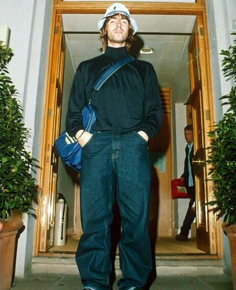

.jpg)
Britpop
Britpop was a mid-1990s British-based music culture movement that emphasised Britishness. It produced brighter, catchier alternative rock, partly in reaction to the popularity of the darker lyrical themes and soundscapes of the US-led grunge music and to the UK's own shoegaze music scene. The movement brought British alternative rock into the mainstream and formed the backbone of a larger British popular cultural movement, Cool Britannia, which evoked the Swinging Sixties and the British guitar pop of that decade.
Britpop was a media-driven focus on bands which emerged from the independent music scene of the early 1990s. Although the term was viewed as a marketing tool, and more of a cultural moment than a musical style or genre, its associated bands typically drew from the British pop music of the 1960s, glam rock and punk rock of the 1970s and indie pop of the 1980s.
The most successful bands linked with Britpop were Oasis, Blur, Suede and Pulp, known as the movement's "big four", although Suede and Pulp distanced themselves from the term. The timespan of Britpop is generally considered to be 1993–1997, and its peak years to be 1995–1996. A chart battle between Blur and Oasis (dubbed "The Battle of Britpop") brought the movement to the forefront of the British press in 1995. While music was the main focus, fashion, art and politics also got involved, with Tony Blair and New Labour aligning themselves with the movement.
During the late 1990s, many Britpop acts began to falter commercially or break up, or otherwise moved towards new genres or styles. Commercially, Britpop lost out to teen pop, while artistically it segued into a post-Britpop indie movement, associated with bands such as Travis and Coldplay.

Local identity and regional British accents are common to Britpop groups, as well as references to British places and culture in lyrics and image. Stylistically, Britpop bands use catchy hooks and lyrics that were relevant to young British people of their own generation. Britpop bands conversely denounced grunge as irrelevant and having nothing to say about their lives. In contrast to the dourness of grunge, Britpop was defined by "youthful exuberance and desire for recognition". Damon Albarn of Blur summed up the attitude in 1993 when after being asked if Blur were an "anti-grunge band" he said, "Well, that's good. If punk was about getting rid of hippies, then I'm getting rid of grunge."
In spite of the professed disdain for the genres, some elements of both crept into the more enduring facets of Britpop. Noel Gallagher has since championed Ride and once stated that Nirvana's Kurt Cobain was the only songwriter he had respect for in the last ten years, and that he felt their music was similar enough that Cobain could have written "Wonderwall".[15] By 1996, Oasis's prominence was such that NME termed a number of Britpop bands (including The Boo Radleys, Ocean Colour Scene and Cast) "Noelrock", citing Gallagher's influence on their music. Journalist John Harris described these bands, and Gallagher, as sharing "a dewy-eyed love of the 1960s, a spurning of much beyond rock's most basic ingredients, and a belief in the supremacy of 'real music'".